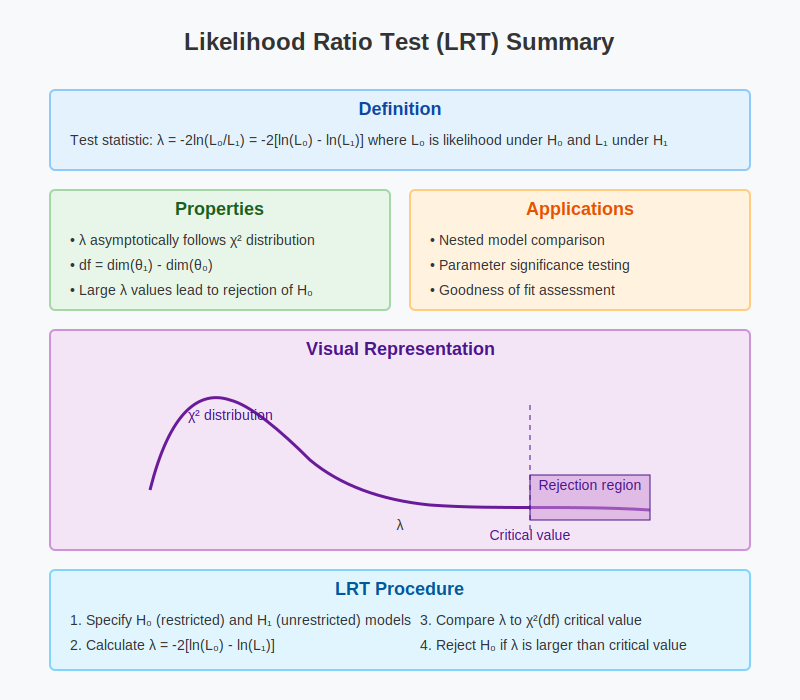

Intuitional Description#
In statistics, the likelihood-ratio test (LRT) is a hypothesis test that involves comparing the goodness of fit of two competing statistical models, based on the ratio of their likelihoods (LR).
Graphical Summary#

Key Formula#
If the first hypothesis (\(H_1\)) believes that the parameter \(\theta\) lies in a specified subset \(\Theta_1\) of \(\Theta\) and the second hypothesis (\(H_2\)) believes that \(\theta\) lies in the \(\Theta_2\), the likelihood ratio test statistic (LRT) between those two hypothesis is given by:
Where the \(\sup\) notation refers to the supremum.
[FIXME]– here do we use the general H0 and H1 (null and alternative) or stick to H1 and H2?
Technical Details#
Why \(\log\) instead of the ratio directly?#
In practice, we often work with the log-likelihood ratio for several reasons:
Likelihoods can be extremely small numbers (e.g., \(10^{-300}\)) that may cause numerical underflow
The log transformation converts multiplications into additions, which is computationally more stable
The resulting statistic has better-understood statistical properties
Null and Alternative#
A null hypothesis is often stated by saying that the parameter \(\Theta_0\) of \(\Theta\), while the alternative hypothesis is thus that \(\theta\) lies in the complement of \(\Theta_0\), i.e., in \(\Theta \backslash \Theta_0\), which is denoted by \(\Theta_0^{\text{c}}\). The likelihood ratio test statistic for the null hypothesis \(H_0: \theta \in \Theta_0\) (versus the whole space \(\Theta\)) is given by:
where the quantity inside the brackets is called the likelihood ratio. Here, the \(\sup\) notation refers to the supremum. As all likelihoods are positive, and as the constrained maximum cannot exceed the unconstrained maximum, the likelihood ratio here is bounded between zero and one and therefore the \(\lambda\) here would always be positive.
Interpretation#
For the likelihood ratio (LRT):
\(\lambda < 0\): Model 1 better explains the data (higher likelihood)
\(\lambda > 0\): Model 2 better explains the data (higher likelihood)
\(\lambda = 0\): Both models explain the data equally well
The magnitude of \(\lambda\) indicates the strength of evidence:
Larger absolute values of \(\lambda\) indicate stronger evidence in favor of one model over the other
Properties#
The likelihood ratio (LR) is always non-negative: \(\text{LR} \geq 0\)
The log-likelihood ratio test statistic (LRT) can be positive or negative
The factor of -2 in \(\lambda\) is chosen for theoretical reasons relating to chi-squared distributions
Example#
Here we continue the example used in the likelihood notebook and likelihood_ratio notebook, and perform the likelihood ratio test to determine which genetic variants are associated with height in a small genetic association study. Using the same data from 5 individuals at 3 genetic variants, we compare two competing models:
Model 1 (\(\beta=0\)) assuming no genetic effect
Model 2 (\(\beta=0.5\)) assuming a mediate genetic effect.
After calculating the likelihood for each model across all variants, we compute the likelihood ratio test statistic (LRT) and its log-transformed version (\(\lambda\)) to quantify the relative support for each model. This approach allows us to identify which genetic variants, if any, show evidence of association with the height phenotype, providing a statistical framework for genetic association testing.
# Clear the environment
rm(list = ls())
# Define genotypes for 5 individuals at 3 variants
# These represent actual alleles at each position
# For example, Individual 1 has genotypes: CC, CT, AT
genotypes <- c(
"CC", "CT", "AT", # Individual 1
"TT", "TT", "AA", # Individual 2
"CT", "CT", "AA", # Individual 3
"CC", "TT", "AA", # Individual 4
"CC", "CC", "TT" # Individual 5
)
# Reshape into a matrix
N <- 5 # number of individuals
M <- 3 # number of variants
geno_matrix <- matrix(genotypes, nrow = N, ncol = M, byrow = TRUE)
rownames(geno_matrix) <- paste("Individual", 1:N)
colnames(geno_matrix) <- paste("Variant", 1:M)
alt_alleles <- c("T", "C", "T")
ref_alleles <- c("C", "T", "A")
# Convert to raw genotype matrix using the additive / dominant / recessive model
Xraw_additive <- matrix(0, nrow = N, ncol = M) # dount number of non-reference alleles
rownames(Xraw_additive) <- rownames(geno_matrix)
colnames(Xraw_additive) <- colnames(geno_matrix)
for (i in 1:N) {
for (j in 1:M) {
alleles <- strsplit(geno_matrix[i, j], "")[[1]]
Xraw_additive[i, j] <- sum(alleles == alt_alleles[j])
}
}
X <- scale(Xraw_additive, center = TRUE, scale = TRUE)
# assign observed height for the 5 individuals
Y_raw <- c(180, 160, 158, 155, 193)
Y <- scale(Y_raw)
# Likelihood function for normal distribution
likelihood <- function(beta, sd, X, Y) {
# beta: effect size parameter
# sd: standard deviation of residuals
# X: genotype values
# Y: observed phenotype values
# Calculate expected values under the model
mu <- X * beta
# Calculate likelihood (product of normal densities)
prod(dnorm(Y, mean = mu, sd = sd, log = FALSE))
}
# Apply the likelihood function to three models for each variant
sd_assumed <- 1 # Assume standard deviation of 1 for our standardized data
# Initialize results table
likelihood_table <- data.frame(
Variant = paste("Variant", 1:ncol(X)),
L_Model1 = ncol(X),
L_Model2 = ncol(X),
L_Model3 = ncol(X),
LogL_Model1 = ncol(X),
LogL_Model2 = ncol(X),
LogL_Model3 = ncol(X)
)
# Test all 3 variants
for (variant_idx in 1:ncol(X)) {
X_j <- X[, variant_idx] # Genotypes for variant j
# Calculate likelihoods
likelihood_table[variant_idx, "L_Model1"] <- likelihood(beta = 0, sd = sd_assumed, X = X_j, Y = Y)
likelihood_table[variant_idx, "L_Model2"] <- likelihood(beta = 0.5, sd = sd_assumed, X = X_j, Y = Y)
likelihood_table[variant_idx, "L_Model3"] <- likelihood(beta = 1.0, sd = sd_assumed, X = X_j, Y = Y)
# Calculate log-likelihoods
likelihood_table[variant_idx, "LogL_Model1"] <- sum(dnorm(Y, mean = X_j * 0, sd = sd_assumed, log = TRUE))
likelihood_table[variant_idx, "LogL_Model2"] <- sum(dnorm(Y, mean = X_j * 0.5, sd = sd_assumed, log = TRUE))
likelihood_table[variant_idx, "LogL_Model3"] <- sum(dnorm(Y, mean = X_j * 1.0, sd = sd_assumed, log = TRUE))
}
likelihood_table
| Variant | L_Model1 | L_Model2 | L_Model3 | LogL_Model1 | LogL_Model2 | LogL_Model3 |
|---|---|---|---|---|---|---|
| <chr> | <dbl> | <dbl> | <dbl> | <dbl> | <dbl> | <dbl> |
| Variant 1 | 0.001367607 | 0.0003050987 | 2.503945e-05 | -6.594693 | -8.094875 | -10.595058 |
| Variant 2 | 0.001367607 | 0.0045633971 | 5.601711e-03 | -6.594693 | -5.389688 | -5.184683 |
| Variant 3 | 0.001367607 | 0.0059679052 | 9.580496e-03 | -6.594693 | -5.121359 | -4.648026 |
Now let’s compute the likelihood ratio test between \(M_1\) and \(M_2\) as an example (the same procedure also applies to any other pair of models).
# add new columns for LRT between model 1 and model 2
likelihood_table$LRT_Model1_vs_Model2 = likelihood_table$L_Model1 / likelihood_table$L_Model2
likelihood_table$lambda_Model1_vs_Model2 = -2 * (likelihood_table$LogL_Model1 - likelihood_table$LogL_Model2)
# Display results
likelihood_table
| Variant | L_Model1 | L_Model2 | L_Model3 | LogL_Model1 | LogL_Model2 | LogL_Model3 | LRT_Model1_vs_Model2 | lambda_Model1_vs_Model2 |
|---|---|---|---|---|---|---|---|---|
| <chr> | <dbl> | <dbl> | <dbl> | <dbl> | <dbl> | <dbl> | <dbl> | <dbl> |
| Variant 1 | 0.001367607 | 0.0003050987 | 2.503945e-05 | -6.594693 | -8.094875 | -10.595058 | 4.4825078 | -3.000365 |
| Variant 2 | 0.001367607 | 0.0045633971 | 5.601711e-03 | -6.594693 | -5.389688 | -5.184683 | 0.2996906 | 2.410009 |
| Variant 3 | 0.001367607 | 0.0059679052 | 9.580496e-03 | -6.594693 | -5.121359 | -4.648026 | 0.2291603 | 2.946667 |
Based on the observed data from the five individuals, the likelihood ratio test results indicate that Variant 1 favors Model 1 more than Model 2 (\(\lambda = -3.00\)), while Variants 2 and 3 show some level of evidence of association with height (\(\lambda \geq 0\), favoring Model 2) compared to Model 1. Variant 2 demonstrates the strongest association (\(\lambda = 2.410\)), suggesting it has the most significant genetic effect on height among the three variants tested.
Supplementary#
The “likelihood ratio” that compares two fully-specified (discrete) models is simply the ratio of the likelihood for the two models given data \(D\):
where \(L(M)\) denotes the likelihood for model \(M\) under data \(x\).
The “log-likelihood ratio” is defined as the logarithm of the likelihood ratio:
where \(l(M_i)\) denotes the log-likelihood for model \(M_i\) under data \(x\). The log-likelihood ratio measures the relative support for model \(M_2\) over model \(M_1\) on a logarithmic scale.
A natural question is, what value of the LR (or LLR) should we treat as “convincing” evidence for one model vs another? The short answer here is that this is context dependent, which depends on the relative plausibility of the models we are comparing. For more discussions, refer to this notes by Matthew Stephens.
Supplementary Materials#
Example 1 – allele frequency#
Here we use the same example 1 in the 6_1_likelihood.ipynb notebook, and we have calculated the likelihood for the two models \(M_S\) and \(M_F\).
Calculate LR#
x = c(1,0,1,0,0,1)
fS = c(0.40, 0.12,0.21,0.12,0.02,0.32)
fF = c(0.8,0.2,0.11,0.17,0.23,0.25)
L = function(f,x){ prod(f^x*(1-f)^(1-x)) }
L(fS,x)
L(fF,x)
The likelihood ratio (LR) is simply the ratio of those two values:
L(fS,x)/L(fF,x)
How to interpret LR?#
So \(LR(M_S,M_F;x)\) is 1.8135904. This means that the data favor the tusk coming from a savanna elephant by a factor of about 1.8. This is a fairly modest factor – not large enough to draw a convincing conclusion. We will have more to say about interpreting LRs, and what values might be considered “convincing” later.
Note that we have deliberately focused on the likelihood ratio, and not the actual likelihood values themselves. This is because actual likelihood values are generally not useful - it is only the ratios that matter when comparing the models. One way of thinking about this is that the actual likelihood values are very context dependent, and so likelihoods from different data sets are not comparable with one another. However, the meaning of the likelihood ratio is in some sense consistent across contexts: LR =1.8 means that the data favour the first model by a factor of 1.8 whatever the context.
Example 2 – concertration of protein in blood#
Here we use the same example 2 in the 6_1_likelihood.ipynb notebook, and we have calculated the likelihood for the two models \(M_0\) (normal individual group) and \(M_1\) (diseased individual group).
Calculate LR#
X_val=4.02
# dgamma(x, shape, rate = 1, scale = 1/rate, log = FALSE) returns the Density for the Gamma distribution with parameters shape and scale at x
y0_val = dgamma(X_val,scale=0.5,shape=2)
y1_val = dgamma(X_val,scale=1,shape=2)
y0_val
y1_val
y1_val/y0_val
Interpretation#
The \(LR(M_1,M_0;x)\) is 13.9, i.e., the data favours the individual being diseased (\(M_1\)) over being normal (\(M_0\)) by a factor of approximately 14.
Recommended Reading#
Section Likelihood Ratio and Likehood in FiveMinuteStats by Matthew Stephens